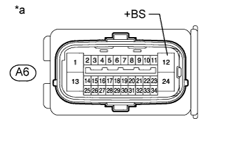

DTC C0278 Обрыв в цепи реле электромагнитного клапана АБС |
DTC C0279 Обрыв в цепи реле электромагнитного клапана АБС |
| Код DTC | Условие обнаружения DTC | Неисправный участок |
| C0278 | Выполняется любое из следующих условий:
|
|
| C0279 | Немедленно после включения зажигания контакт реле электромагнитного клапана замыкается на 4 с, когда реле выключено. |
|
| 1.ПРОВЕРЬТЕ НАПРЯЖЕНИЕ НА КОНТАКТЕ (+BS) |
Выключите зажигание.
Отсоедините разъем A6 ЭБУ системы противоскольжения.
|  |
Измерьте напряжение в соответствии со значениями, приведенными в таблице.
| Контакты для подключения диагностического прибора | Условие | Заданные условия |
| A6-12 (+BS) - масса | Всегда | 11 - 14 В |
| *a | Вид спереди разъема со стороны жгута проводов: (к ЭБУ системы противоскольжения) |
|
| ||||
| OK | |
| 2.ПРОВЕРЬТЕ ЖГУТ ПРОВОДОВ И РАЗЪЕМ (КОНТАКТ GND1) |
Отсоедините разъем A6 ЭБУ системы противоскольжения.
Измерьте сопротивление в соответствии со значениями, приведенными в таблице ниже.
| Контакты для подключения диагностического прибора | Условие | Заданные условия |
| A6-1 (GND1) - масса | Всегда | Менее 1 Ом |
|
| ||||
| OK | |
| 3.СНОВА ПРОВЕРЬТЕ DTC |
Подсоедините разъем ЭБУ системы противоскольжения.
Удалите коды DTC (Нажмите здесь).
Запустите двигатель.
Совершите поездку на автомобиле со скоростью не менее 20 км/час (12 миль в час) длительностью 30 с или более.
Проверьте, выводится ли тот же DTC (Нажмите здесь).
| Результат | Следующий шаг |
| Коды DTC не отображаются | А |
| код DTC выводится | B |
|
| ||||
| А | ||
| ||